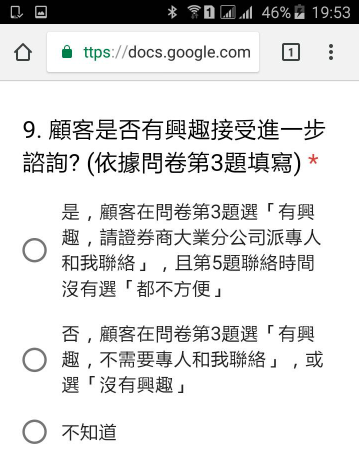

工讀生無法同時開啟「工作日誌」和「問卷」，怎麼辦？
工讀生請把「工作日誌」加至常用瀏覽器的「書籤」或「我的最愛」，以瀏覽器開啟「工作日誌」，以 QR code 掃瞄器開啟「問卷」，務必確保「 工作日誌」和「問卷」可同時開啟(如下圖)。如此，工讀生才能於填寫「工作日誌」第 1 至第 6 題後，協助顧客填寫「問卷」，並於送出「問卷」後，再返回「工作日誌」完成第 7 至第 13 題。
工作日誌「第 9 題：顧客是否有興趣接受進一步諮詢」應該如何填寫？
「工作日誌第 9 題」應該根據顧客在「問卷第 3 題」的選擇：
如果顧客在「問卷第 3 題」選「選項1：有興趣，請證券商大業分公司派專人和我聯絡」，同時在「問卷第 5 題」的聯絡時間沒有選「都不方便」，則工作日誌第 9 題選「是」。
如果顧客在「問卷第 3 題」選「選項2：有興趣，不需要專人和我聯絡」，或選「選項3：沒有興趣」，則工作日誌第 9 題選「否」。
為方便記憶，我們已將「工作日誌第 9 題」的選項細節寫清楚，見下圖。(提醒：若顧客沒寫問卷，或在「問卷第 5 題」的聯絡時間選「都不方便」，工作日誌第 9 題也選「否」。)
本活動的目標是找到有諮詢意願的顧客。大業營業員會聯絡工讀生在「工作日誌第 9 題」紀錄為「是」的顧客 (即有諮詢意願的顧客)，一旦判定為潛在顧客或願意開戶，工讀生可得績效獎金。

顧客填寫問卷後，將傳單退回，怎麼辦？
工讀生接觸的顧客已經在聯邦證券開戶了，怎麼辦？
工讀生接觸的顧客已經填寫過本活動的問卷了，怎麼辦？
提早發完20張傳單，怎麼辦？
工讀生想 “測試” 如何填寫「問卷」或「工作日誌」，怎麼辦？
以下哪些商品是聯邦大業證券目前有販售的呢？
工讀手冊第 8 頁 VI. 工讀生績效獎金的說明有筆誤。